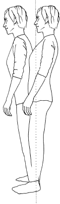
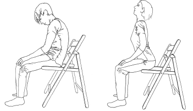

Feldenkrais for Actors
If we eliminate from standing all that is extraneous to it, such as standing manly, femininely, authoritatively, nicely, efficiently, arrogantly, proudly, or meekly and all the other cross-motivations that we cultivate in childhood and adolescence with such wholehearted conviction of doing right, there remains standing, as dictated by the structure of the body and its nervous mechanisms, a stance that is rare, but of which we are all capable.
Moshe Feldenkrais45
In your mind, go back to that exercise of standing in front of the audience and recall what you felt. To just be present easily and simply without ‘doing’ is very hard. In the last section I talked about awareness, embodiment and complicité in relation to this and where Feldenkrais can help you simply be present. But there is, of course, more to this picture.
When an actor simply stands in front of an audience, all their habits and patterns tell a story, as we saw in Part 1 – they are all there to be read like a book, as John Wright’s ‘Copeau’s Game’ always shows. It’s often at this point (if not before) that actors start mentioning their ‘posture’. And when they turn up in my studio for a one-to-one Feldenkrais lesson they often say things like: ‘I know I have terrible posture. My mother always told me to sit up straight and not slouch, and then the teachers at drama school always tell/told me that I have bad posture.’ And then comes a list of things to do with the structure of their spine that they have been diagnosed with or issues with their ‘alignment’ or ‘core’ that they have been told they need to correct or strengthen respectively. This is not limited to actors. It is a concern for many people, but actors (along with dancers, musicians and sportspeople) often come across it sooner because of what it means for their work.
This is a huge subject. And everyone – from medics to alternative practitioners to sports and fitness trainers – has a huge amount to say about it. This is not the place to analyse or take issue with this plethora of ideas. I am simply going to present a different way of thinking about posture that comes from the Feldenkrais Method, and is very useful, especially to those in the acting world.
Here is an example of a scenario that often plays itself out in different ways in my studio, and no doubt in many others. An actor comes in who has been told there is something wrong with his posture and that this is a problem for his breath and voice (see Part 5), for his ability to be powerful, balanced, fluid, centred, grounded, and so also for his ability to be easily present as well as convincing in certain roles. He has always had tension in his shoulders, he tells me, and sometimes he has a little discomfort in his back, but only really since he started working hard at drama school or started on a particularly physically challenging show or film. He then tells me he has too pronounced an arch in his lower back, too sunken a chest and that he carries his head too far forward. I can see that all of this is true. He then proceeds to show me how he has been trying to correct this faulty alignment by pulling in his belly, sticking out his chest, pulling his shoulders back and pulling his chin in and down. The result is that while he thinks he should be more satisfied with this ‘better posture’, he finds he cannot breathe properly, his throat feels constrained, he feels awkward and uncomfortable and, as soon as he is occupied with something else, he forgets to ‘correct’ himself and reverts to his usual ‘bad posture’. Moreover, this ‘good posture’ is something he can only maintain when he stands still. As soon as he walks, runs or starts doing anything, the way everything is aligned in this ‘good posture’ is required to change, but he doesn’t have the myriad instructions for how everything should stack up in every different movement, so the simple version he is trying to stick to simply falls apart. This comes back to something I said earlier about there being no rules that work for every circumstance. If you are relying on tucking in your chin to have good posture, what happens when you need to look at the sky or reach up to a high shelf? And how are you going to put your shoes on while sticking your chest forward? Go ahead and try. So if the rules of good posture are defined by a specific way of holding yourself when standing but don’t apply when you are actually doing anything, then how meaningful or useful are they? And if the corrections required make the actor less comfortable, less able to be easily present and less able to do anything, what makes that way of defining or improving posture a particularly good one?
Very quickly we start to move away from the idea of posture as something static to something dynamic: something that can change and adapt to whatever you are doing. It is no longer a set of instructions for holding everything in a specific alignment, but something about enabling you to do things – about how you function. Dr Feldenkrais was not a fan of the word ‘posture’. He preferred the word ‘acture’, because posture is not a position; it isn’t separate from anything else you do: it is part of everything you do. His ways of defining good posture have nothing to do with instructions to stand with your feet X width apart and hold your head/pelvis/lower back/shoulders like this or that. For example, one of his main ways of defining good posture is that you stand (or sit) in a way that allows you to move in any direction immediately without a preliminary reorganisation. He also talks about it as the skill of ‘reversibility’ – being able to stop or start a movement immediately at any point and change direction at any moment.46 What does he mean? Well, try this game…
Acture
Sit on a chair however you like. Make yourself comfortable. No, really. Don’t do ‘good posture’. You want to know how good your posture actually is, not assume some idea of posture that you have to work to maintain.
Stand up. How much did you have to do before you could get up? Did you have to uncross your legs, shift your feet, straighten up? Do it again if you are not sure.
Sit down and get up again several times in succession. Make it better, smoother, easier. Sit down properly each time, don’t just ‘kiss the chair’. Give your weight to the chair fully, but without falling or dropping into it. Then stop and stay sitting and see how you are sitting now. Probably differently. Would your mother/teacher like it better?
Now stand. How are you standing? Where is the weight on your feet, for example? Are your knees locked back? How do you carry your head? Is your weight more in one leg than the other?
Step forward. And again. Keep going forward. Stop. Go backward. Forward again straight away. Stop. Wait. Now go Left. Right. Left. Wait… wait. Right! Get a friend to give you random directions like this, with random timing if you can, and move immediately but without a scramble. Make it smoother, cleaner, easier. After a while, notice how you are standing in the pause between movements. Is it different? Do you like it better?
This idea of ‘good posture’ (I won’t use the word ‘acture’ here as it has never caught on, despite its accuracy) is profound. It taps into the most fundamental purpose of ‘good posture’, which is survival. Being able to move in any direction immediately enables you to get out of the way of danger – or into safety: to respond and adapt. Martial artists, like Moshe Feldenkrais, know this because, if you are not ready to move, you are an easy target: if you have to make a preliminary readjustment before you can get out of the way, that could slow you down enough to finish you. But this mobility, this readiness and ability to adapt and change is not just about survival, it is about how you negotiate your way in the world. That is a very big idea. It brings us back to the notion of being able to respond in the moment, which makes this view of posture especially pertinent to performance, where there is a need to be alive, spontaneous and ready to switch direction at any time.
This dynamic way of thinking about ‘posture’ helps us understand that it is really just a resting point between movements, a point of departure and arrival. We could call it ‘Home’. Like the moment a swinging pendulum hangs in the middle before setting off to the other side, and where it will eventually settle once all the movements subsides. We, however, very rarely settle exactly in the middle. When you paid attention to how you stood in that last game, you may have noticed that you had more weight on one foot than the other. Or if you ‘listened’ to yourself as you sat, you probably had more weight on one side of the pelvis than the other. If you didn’t, try it now. I would put good money on there being a difference between the sides. It’s most unlikely that you are evenly balanced. You may not notice an imbalance because it will feel familiar and therefore ‘right’ to you, as Home usually does. But that does not mean you are actually in the middle. Listen carefully. If you can feel the difference, what do you do about it? You could try and do something to make yourself more balanced, but then you are back to correcting and fixing and holding yourself in place. If you think back to the pendulum, it swings the same amount to the right as it swings to the left, so middle is always middle. If you push it more to the left, it will swing more to the right. And as it runs out of steam and starts to go less to the right, it also goes less to the left. It equalises. So how about if, instead of trying to fix middle, we did the opposite and tried to find movements away from middle in every direction, aiming to equalise those movements? Then let’s see what that does to where we settle, where we find middle, whether Home simply shifts as a result.
Stand and feel where the weight is on your feet: toes? Heels? Insides of your feet? Outsides? More on one leg than the other? Or just differently on one foot and the other?
Imagine you can only move all together in a line like a broomstick, not bending or twisting or anything from your feet to your head. Like an upside-down pendulum.
Lean forward from your ankles so your weight shifts into the front of your feet and your whole self moves forward in a line, your head moving through space. You can only go so far before you would fall over, or move a foot to catch yourself. Don’t go that far. Stay within your possible limit but feel how far it is.
Now lean backwards. Stay all in one line. Find your easy limit.
Go forward and backward like this. See if you can do this without bending anywhere other than your ankles, so that you are all in one line and your head swings through space. You can probably go further in one direction than the other, so even them up by making the direction you can go further smaller to match the direction you can go in less.
When they are as even as you can manage, start to go a bit less in each direction, and then even less, and less until you hardly move at all, so that someone coming in couldn’t see you move – though you have the sense of still moving, however minimally. Feel where you are on your feet. Is your weight in the same place or further forward or backward?

Now do the same thing leaning left and right. Explore how far you can go before you lose balance, and notice if it is more in one direction or the other. Make the bigger distance smaller to equalise, rather than force yourself to go further than you are comfortable with. Go from side to side, making the distance smaller and smaller until you settle but still have that sense of potential movement. Where is middle now?
Having gone in these four cardinal directions you can now describe a full circle that is equal in all directions. Make sure you do not go more in one direction than another. Make it smaller until it is a true circle, and then keep making it smaller until you settle. How do you stand? Where is your weight on your feet? Does anything else feel different in you?
This is a good little lesson, and it’s helpful for centring, as I hope you could feel. And it illustrates the idea of where we settle and of posture as simply a place between movements. But it’s not the whole story because, of course, we are much more complicated than a pendulum! We don’t hold ourselves all in one line – we have many moving parts that can bend and twist and, moreover, that prefer to bend and twist more in some directions than others. Again, one answer is to go the ‘correction’ route and have someone put you in the middle through a set of instructions like: ‘Bend your head to the left more, move your ribs over to the right, tilt your pelvis down on the right, shift it over your right foot. Well sort of, can you shift it a bit more? No not like that, okay, now a bit less – okay, well, that will do. Sort of. It’s a bit better. Now hold that.’
But that’s going to be a tough call again, isn’t it?
Returning to the idea of going away from middle, you can explore the ways you bend and twist in many directions – and if you can learn to bend and twist in many directions instead of just the few you favour, then, just like the pendulum principle, your Home is more likely to be in the middle than if you stay stuck in your habitual patterns. When you think how many variations of ‘away from middle’ there are for a human being, you realise that this is potentially a huge job – which is why Moshe Feldenkrais developed a couple of thousand lessons (and every Feldenkrais teacher develops more of their own). Plus, given the fact that improvement is always possible, you can see how it could be a life’s work – but don’t worry, you can usually feel a difference even after one quite simple lesson, and significant improvement within weeks or months. If you couldn’t move on, discover more and improve, life would be boring wouldn’t it? Isn’t that part of why people like acting – because there are always more new things to explore?
Lesson 4: Making Your Posture ‘Worse’
Sit on a chair. Feel how it is. What part of your bottom do you sit on? If you stick your hands under it you will find a bony rocker on each side – your sit bones (see the drawing of the pelvis on p. 107). Do you sit in front of them, behind them or on them? Can you tell? Is your lower back rounded backwards or arched forwards a bit/a lot, or somewhere in between the two? Is your chest open or a little sunk? Where is your eyeline? Do you look up, down or on the horizon (don’t correct it)? Are you comfortable or is it a lot of work to maintain whatever position you are in?
Put one hand on your belly and one hand on your chest and roll back behind your sit bones, so you sit more on the back of your pelvis. Let the rest of your back and chest and head go with it, so your hands move towards each other and you find your back rounding backwards, your chest sinking and closing in front and your head and eyes looking down towards your groin. Yes, slouch. That’s what I am getting at. Do everything that you might think is ‘wrong’. But do it as well as you can. Use the whole of your spine. Are there parts that don’t join in? Don’t force them to do more, make the bits that do it well do it a bit less so as to match up your whole spine that way instead. If you don’t force it, it is likely to work better. No one likes being forced, and the deep parts of your nervous system that govern your habitual patterns are no exception. Do you feel your back get broader as it rounds?
Now the opposite. Roll forwards on your sit bones. Your two hands will move apart, your back will arch and your whole front will open up and get longer, and you will probably look up more. Can you find this through your whole back, not just in the lower back, which tends to do this well? Make it less in the bit that does it most and try to equalise the movement through the whole of your back. Yes, arch! Be ‘wrong’ in this direction too. Do you feel some place in your back narrowing as you arch?

Go from one to the other gently and slowly. Do you go more in one direction than the other? Match it up. Go less in the direction you do best. Now, as in Lesson 3: The Pendulum, make the forward and backward rolling smaller and smaller until you can still feel the potential for the movement but no one could see it. Where are you on the sit bones? What shape does your back have? How comfortable is it? How is your posture?
So Can You Slouch Well Now? Good!
There is an inherent problem for actors in having to maintain ‘correct’ posture, which is that it’s not that often you get to play someone with great posture. You need more variety than that. I am not legitimising all your unhelpful habits, but I am saying that you need more than a set of rules about how to stand correctly. If you need to play a character that slouches, you need to be able to slouch, and that means rounding your back and sitting on the back of your pelvis – which you may have trouble doing if you can only arch in your lower back. But if you need to play someone who arches their back and sticks their chest out, you need to be able to do that too – but if you can only round a lot in the upper back, you are going to have trouble sticking that chest out! That means the whole of your back needs to be able to arch and round, not just bits of it. That little lesson you have just done is great for all of that, although we only went in two directions and there are many more (see Lesson 5: The Pelvic Clock). Crucially, being able to go well in many directions means you will have a better ‘middle’ too. Marvellous. It’s a nice idea that going in all the ‘wrong’ directions can give you better posture, isn’t it? But it’s true. You use these planes of movement in many ways in life and you need them all. None of them are ‘wrong’. As Feldenkrais himself said, it’s not so much a particular posture per se that is problematic for people, it is being stuck with only one option. One option, Feldenkrais would say, is like an automaton with no choice. Two options puts you at the level of a light switch. But more than two starts to make you a human being.47 And isn’t that a useful way for actors to think about it, given they clearly need as many options as possible rather than a set of rules that don’t apply most of the time?
Are you worried about your voice with such ‘bad’ posture? The relationship between voice, breath and posture is very important (see Part 5), but while you may need to stand in a certain way to facilitate a particular voice exercise, more broadly in acting (and life), if you can only use your voice in one kind of posture, you are in trouble, my friend.
Relationships of Parts
To have good posture you don’t need to fix on one specific way of having your legs, pelvis, feet, chest and head, but it is important to be clear that the way those parts relate to each other when standing isn’t random either. There are more and less useful ways for them to relate depending on what you want to do. It is unlocking the variety of relationships between those parts that is going to help. In that last lesson you will have noticed that where the head is has something to do with where your pelvis is and with what is going on with the spine in between. When the pelvis moves, each vertebra throughout the spine is asked to adjust and that in turn affects the head. And so, in simple standing, if you fix where your head and your chest and your lower back should be – according to some external set of instructions which ignore how all these places actually interrelate – you are likely to be setting up all sorts of strains and efforts and difficulties. For instance, if the actor from my earlier example simply pulls in his chin rather than feeling how the length of the back of the neck needs to change, how the vertebrae at the base of the neck/very top of the back have to shift, and how the shoulders, chest, lower back and pelvis all have to respond, in turn, to make space for his head to find a new place that allows his chin to lower, then he will simply compress his throat and set up strains that he, quite sensibly, will not want to tolerate. Ironically, if he discovers how his head moves in relation to the rest of him, eventually he will also find that he is closer to the biomechanical ideal he was after in the first place: he has really learnt something about his structure and how it works. And, given he has a structure somewhat like other people’s, the way he does something will start to look similar to the way other people who do it well do it too. (Likening parts of the body to a family, Todd Hargrove quotes Tolstoy nicely in this context: ‘Happy families are all alike; every unhappy family is unhappy in its own way.’)48 But he won’t be constrained in the choices he makes. If he needs to find an organisation that is less good in order to play a particular character, it will still be available.
Being Grounded
Whenever the word posture rears its head in actor training or rehearsal, words like ‘grounded’ and ‘centred’ are never far behind. In my experience, many students and even some professional actors don’t really know what those things actually mean or (more importantly) what they actually feel like, except in a rather nebulous way – and everyone can always benefit from a clearer understanding.
If you think back to Being Present with the Audience (p. 82), you may well have found yourself wanting to shift or fidget and been unable to simply be there, which is often described as ‘ungrounded’ or ‘not centred’. However, it is no good simply telling an actor they need to be more grounded or more centred if they don’t know how that actually feels. It is therefore best to have an experience that gives you that feeling – which is often one of the results of Lesson 5: The Pelvic Clock coming up shortly. But before that, it is also worth unpacking the ideas involved.
While talking about middle in relation to a pendulum swinging and where it comes to rest, I said we are not truly like a pendulum because we are made up of so many more moving parts, but there is another reason. A pendulum usually has its weight at the bottom and we have ours nearer the top. Being a sort of upside-down pendulum, a human being is top-heavy, with a high centre of gravity and a very narrow base of support in normal standing, which makes it easy for us to be set in motion in any direction using very little effort. Once the centre of gravity goes beyond the base of support you have instability or, in more positive terms, the possibility of motion, and in a human that takes very little energy. If you compare this to a four-legged animal, which has a wide base of support and a lower centre of gravity, it becomes obvious. Human beings topple into motion with the smallest deviation from middle: a four-legged creature has much further to go. We also benefit from being able to twist around our long thin axis: not so a wide-based creature. Many creatures are faster than us, but few have a human being’s speed when it comes to twisting, turning and changing direction. Put yourself on all fours and feel the difference. Our upright ‘posture’ is all about mobility. If you think of a statue of a human being, it is not an easy thing to keep upright! One small teeter and it will topple, because not only does the statue have our high centre of gravity/narrow base of support, but, not being alive, it also lacks the self-righting reflexes we have that keep us in what Feldenkrais called a ‘dynamic equilibrium’.49 In other words, we are built not to maintain continuous stability (like a statue, which has to be weighted to make sure it remains safely upright) as much as to lose and regain stability in a continual process. This comes back to the Acture or Dynamic Posture games, which give an actor a very alive, very volatile sense of possibility rather than the lifeless, static quality of a statue. But what does that mean in terms of groundedness? Does it mean we can’t be grounded and have good posture? And if we naturally have a high centre of gravity, why are actors sometimes told that theirs is ‘too high’ and they need to ‘bring it down’? Let’s look at what groundedness might be and what a ‘lower’ centre of gravity might mean.
Being grounded is often equated with stability. Another word that is often used is ‘rooted’; a sense of being welded to the ground. It brings up the image of trees and buildings with deep foundations and things that essentially don’t move and are not made to move. While I have stressed that we are all about mobility, we do need stability too. If you are not stable on one leg, how can the other leg be free to swing forward when you walk? If your torso cannot stabilise against your arm when you lift it, you will fall over. Laban contrasted ‘stability and lability (or mobility)’ and emphasised the need for both. The one liberates the possibility of the other. Some part needs to anchor for another to move. On a deeper level, we also need the sense of safety that comes with stability. The ability to move quickly in any direction is important for survival and safety – but safety also involves having the option not to be pushed or pulled off balance; not to be knocked over or dragged into a car; not to be pushed around in emotional as well as physical ways. Obviously this links to being able to take our space clearly and simply on stage without being pushed around by the need to resort to extraneous movement.
What do you do so as not to be dragged off or pushed around? Going back to the ideas in the previous section, you could widen your stance (think sumo wrestler), so making a bigger base of support and lowering yourself and your centre of gravity too. It both changes the way you find support from the ground and means that you are less able to topple into motion.
On stage you are not actually stopping someone from pushing you; you do want the possibility of motion and playing your role in a sumo stance might be a little strange. However, the way you find your support from the ground is key. You don’t have to actually lower yourself, but you could stop doing the unnecessary work you do to hold yourself up. If you can improve this it will allow your system to become more accurate and refined in the way it finds support from the ground. You can stop actively trying to pull your centre of gravity up. ‘Stopping doing’ and ‘doing less’ are not such easy notions, I know. We are so used to the idea that we need to work harder and do something more rather than less. It is also not true that you do nothing to be upright, of course, otherwise you would simply collapse, but you may need a better balance between what needs to work and what needs to do less. We are actually beautifully designed so that, ideally, the weight of a person can meet the ground via a system of struts (bones) and tensile strings (soft tissue such as muscle, tendon, ligament, fascia) held under just the right amount of tension for an upright position to be maintained without conscious effort or regular strength training. This enables your bones to be maintained in a healthy relationship to each other, so that you can find accurate support from the ground up. Specifically designed anti-gravity muscles can work continuously without tiring (when did your jaw last drop open out of sheer muscle exhaustion?). If you have a sense of effort or have to work to keep yourself upright, it is a signal that your standing is not well organised and that you are, in some sense, ‘falling’ – muscles not designed for the job are being recruited to hold you up. In a topsy-turvy kind of way, your musculature may be working more because you are collapsing!
That can happen for a number of reasons. For example, your head can be easily maintained on the top of your spine by your structure and the anti-gravity muscles, but if it starts for some reason to fall forward, then muscles usually required for movement of neck, shoulders, etc., may have to come into play to hold it and to restrain it from falling further. These muscles are designed more for organising movement, and if required for continuous support they get tired and complain. One solution is to train or activate groups of muscles to hold the spine and bring the head back into place. If the work of the muscles that are pulling the head out of place is not undone, this approach could become a fruitless tug of war, and the person can end up held in a vice-like grip. We are back to seeking not to correct in one place as much as to re-find equilibrium through the whole. To re-find ‘middle’. As I have already said: don’t try to fix middle but explore different directions to enable the system to recover it.
When your weight meets the ground, the ground exerts a force on you equal to your weight (Isaac Newton’s third law of motion: ‘For every action there is an equal and opposite reaction’). This is known as ‘ground reaction force’. It is as if the ground pushes you up. With less interference from extraneous muscular work, your weight can be better distributed and so meet the ground in such a way that you find more accurate support. This support from the ground, in turn, enables you to have a better organisation for standing: one which does not require as much extraneous muscular work… and so on. Closer to a virtuous circle. Initially, letting go of extraneous work can give you an experience of your own weight that can produce a feeling of heaviness. The sense of being pushed up from the ground through the skeleton can translate into a feeling of rootedness and yet of lightness too, especially in the upper half of the body, because inappropriate muscles are not overly tense with the work of trying to hold you up. The way we find support from the ground so that we can easily (and continuously) be held up away from it is the essence of being ‘grounded’.
Conversely, once we have lost this equilibrium, the way we relate to the ground is compromised, and we can feel less well-balanced, less safe: less centred and less grounded. Often we then start to seek a sense of safety by holding ourselves more tightly and/or by holding ourselves up away from the ground, pulling up the ribs, shoulders and neck, which takes us further away from allowing our structure – and the ground forces – to do their proper job of support.
Just watch how people try to get up from a chair or the floor. Mostly they will try to pull themselves up from their head, which is nonsense really, yet many of us (most, even?) do it. The muscles of the head and neck are not powerful; they are not built to pull or drive the rest of us – only to direct. So how are we going to pull ourselves up against gravity like that? The push through the legs (aided by ground forces) and how they unfold, the righting of the pelvis over the legs and the continuing push up through the spine is what is needed to stand, and that will simply bring the head into place at the right time. Similarly, if we try to hold ourselves up from the head, neck and shoulders to keep standing, that involves a great deal of effort and strain in muscles unequal to the task. Without that work, the head and shoulders can simply rest, carried on the support of the rest of the skeleton, which is in turn supported by the ground.
Our muscle tone is turned on by our relationship to the environment. That means the very specific ways we find support from the surfaces we are on. If I am faulty in the way I find support then my musculature must in fact become engaged to support me because orientation is so crucial to me. The moment I don’t have the support I will fall. What will stop me from falling? Something has to turn on to stop me from falling.
Moshe spoke clearly about how it is that we continually find support as the basis for action. He gave us the criterion that we should move in such a way we keep an even muscle tone. He gave us this criterion and he said that that happens if we counterbalance, if we find equal and opposite supports. As we become more and more specifically clear about where we get support from, the clearer we are in the muscular engagements. And it must engage. Because no living system that is healthy is going to just fall down. So the more specific, more refined, more clear you are in the way you find where you are supporting yourself from, the clearer any action you make will be.
Jeff Haller (Feldenkrais trainer)50
The centre of gravity varies from person to person according to their weight and build, and is slightly different in women and men (lower in women, as we tend to have more weight lower while men have more weight higher). It also varies with position as we have already seen (wider base, lower centre of gravity). In most people in normal standing, the calculations bring it out somewhere in the lower belly area,51 opposite the second sacral vertebra – the traditional seat of power in martial arts. But if you are having to pull yourself up in some way you can imagine that will have an effect on your centre of gravity too.
Of course, there are many other ways and reasons we might overwork or pull ourselves up so that the support is disrupted. Sometimes a certain way of pulling the belly in can do it. Sometimes we don’t allow a full out-breath, so the ribs are never really allowed to come down from the position of an in-breath, or perhaps we have a habit of holding the chest up or arching the back. We may be influenced by an exercise-based, athletic or dance training that has become ingrained, or it may stem from a way of dealing with life or presenting a certain image to the world. However it comes about, this is the sort of thing that gives people the look of a high centre of gravity and also robs them of a sense of groundedness.
There are many ways of approaching the idea of the pelvic clock, and many variations. This is just one.
A scan in standing
• Do you feel that there are places working to hold you up? Sometimes it is difficult to feel because these are very habitual places that you don’t notice until they stop. Do you hold your shoulders up? What places in your legs are working hard? Your belly?
• Can you breathe all the way out or do you hold your belly in?
• Feel where your weight is on your feet when you are standing. Heels? Toes? Insides? Outsides? Is it the same in both feet? Give yourself a little time with this as your weight may be shifting around a bit.
• Does it feel like you stand more on one leg than the other? Shift your weight more on to the leg you feel your weight in more, how is your balance there? Then the other side. How does it feel different? Do you feel balanced on either leg or is it easier on one side?
Lie on your back with legs long and scan through as in Lesson 1: Basic Awareness, to feel how much of you leans on the floor and where. Throughout the lesson come back to this between each block, so that you can rest a little and also notice any differences in how you lie.
Bend your knees and plant your feet. Imagine there is a clock on the back of your pelvis, with 6 down near the tailbone, 12 at the top of the back of the pelvis, close to where you might wear a belt, 3 on one side and 9 on the other. Your pelvis is the big basin-shaped structure that includes the hip bones, the wedge-shaped ‘sacrum’ in between the hip bones at the bottom of your spine that ends in your tailbone, the pubic bones at the front near your genitalia, and the ischia or sit bones, which are rounded bones that you sit on.
Roll the pelvis so it leans more on 6 (near tailbone) and then more on 12 (belt). Don’t lift the whole pelvis ever, just tip it so one end lifts a little and the other leans. Notice how your back changes its contact with the floor as you do this too. When does the lower back come closer to the floor, and when is it pulled away? Can you allow this movement to travel all the way through your back and move your head? Soften the chest and let the movement flow through until you feel your head do something. What does it do? Does its movement echo the tilting in the pelvis?
Come back to the same movement and now listen to how you make it. How much do you work to pull in the belly to tilt the pelvis and then push the back into an arch for it to tilt the other way? Do you need to work as hard? Notice if your feet contact the floor differently as the pelvis rolls. Do you notice that in one direction the feet press a little more and in the other they are pulled at a little? See if you can emphasise pressing the ground a little to roll the pelvis one way and have a sense of the feet pulling at the ground a little (without moving) in the other direction. You may feel the tailbone – and even the whole spine pushed up away from the heels and pulled down towards them more (or just differently) by this changing relationship to the ground. You can play with these different versions. Then notice if this movement of the pelvis can travel through the whole skeleton and even nod the head so it makes its own little 12/6 movement too.
Now press the left foot a little to roll your pelvis to the right – probably 9 but depends on how you ‘see’ your clock. Can you find how to do that? When you connect with the ground clearly, you can transmit force through the leg bones into the pelvis, so that the left side lifts and the right side leans more. After a few movements it can become one whole integrated movement that comes up and away from your contact with the ground.
Keep doing this movement and notice where your knees go. Do they go to the right with your pelvis or stay more upright? If they go to the right can you feel how the soles of your feet tilt away from the floor too? This is not so much using your contact with the ground as using the weight of your legs to move the pelvis. It is an interesting movement too, and you can feel how it asks your whole spine to twist high up into your back.
This time, see if you can find how to do it by leaving the knees towards the ceiling and not tilting them, so you can use the contact of the whole of the left foot to enable the movement. You might feel the front of the hip joint opens up. Listen to how your belly can roll away from this leg towards the other leg – can you keep that one standing too so it doesn’t fall to the right? Just let the belly roll towards it. It isn’t always easy and can take time to find. Notice how this movement also travels through the whole spine to your head. Does your head move too?
Do the same on the other side: press the right foot a little and roll the pelvis to the left. Make the movement many times. Is it different this side?
Now that you have found 6, 12, 3 and 9, you can begin to fill in the hours in between. Start at 12 and then gradually find 1, 2 and 3 and come back again through 2 and 1 to 12. Feel yourself lean on these hours. How does the contact of your feet change to help roll the pelvis around these hours?
Now add in 3 to 4 to 5 to 6 and back through all those hours and 2 and 1 and 12. Find each hour carefully and then slowly join up all the hours around this side of the clock. Listen to how you use yourself to do it. Can you still breathe? Can your knees stay more or less to the ceiling? How do you use your feet? How does this movement go through your back? What happens in your head – does it do something similar to the pelvis?
Come back to 12 and find 11, 10 and 9. Take your time. Be accurate.
Add in 8, 7 and 6. Then join up this whole half of the clock, slowly and carefully. Feet… knees… how the movement flows through your back to your head.
You could then start from 12 and go to 1, 12, 11 and on from there to 3 and 9. And then from 6 to 5 and 4 and keep widening out to 3 and 9, or any other version that interests you, but listen to all the same things: feet, knees, spine, head, breath.
Finally try some full circles in each direction. Remember it is accuracy and quality of movement (smooth, easy, rather than juddery or sudden) rather than size or speed we are looking for. Can you feel how this movement involves the feet on the ground but the pelvis tilts around the top of the leg bones in response, and the movement carries on through the spine and rolls the head?
Rest for a moment with long legs and feel how you meet the floor. Do any parts of you rest differently?
Roll to the side, sit and come to standing. How do you feel? Taller? Shorter? Heavier? Lighter? Or something else? How do your feet meet the floor now? What is it like to shift your weight from one leg to the other? How well does each leg support you? How balanced do you feel?
Finding – and Keeping – a New Home
Notice what you felt at the end of that lesson after exploring so many subtle shifts of the pelvis, head and spine in relation to each other. Out of those possibilities it is likely that your neuromuscular system – the bit that does the learning and acts on it for you – already picked a slightly different ‘middle’ for you when you stood up. You may also have felt more ‘centred’ and have a sense of being heavier in some ways and maybe lighter in others too. This is what grounded feels like.
Sometimes this new way of being is immediately welcome and even a relief. I love to see those smiles of quiet delight (or even wide eyes and dropped jaws!) as people stand up and the result is revealed. I will always remember one acting student, who, finding himself able to stand easily at his full (and considerable) height at the end of a lesson, rested his arm on the top of the bookshelf, smiled down at me (I am rather small!) and said, ‘Ah, the magic of Feldenkrais.’ And that is not unusual. It really can be like that. Sometimes it can feel ‘wrong’, ‘weird’, off-centre, even upsetting, simply because it is new. It doesn’t yet have the familiarity and security of Home. But many more experiences of this new way of being as a result of many different lessons will eventually make this and subsequent improvements feel more like Home, and you won’t even have to struggle to maintain it. Partly that is because it is not dependent on one way of holding yourself. It has come about as a result of all the different parts learning how to move better in relation to each other in many different ways; whatever you do will be improved, because you are not dependent on one way of being. And partly because a movement that has been discovered, learnt and fully owned does not need your conscious attention to happen. Remember ‘Techniques happen in the absence of conscious thought’52: you wouldn’t be able to walk down the road if you had to think about it all the time! And standing is the same. Your system will simply adopt it as your new favoured habit, until you go on and develop an even better one that it decides to switch to as its new default. The theory is that your system is programmed to pick the best available option for you, but it’s worth noticing that is the best available option. It can’t pick something that isn’t yet available to you. To be fair, ‘best’ is a tricky notion. There are strong survival mechanisms built into your system that should pick ‘best’, but ‘best’ in the circumstances can mean a number of things. Sometimes your system will revert to an older movement pattern even if it is not exactly the best, even if it might hurt you, because the pathway is that much older, more familiar and more deeply wired in, so it can be resorted to more quickly in a stressful situation. Often it reverts just because something in you (not conscious probably) still feels safer with that old familiar way even if the new way is clearly better: a case of ‘better the devil you know…’ However, eventually – with varying amounts of reminders and revisiting it in lots of different ways – the new possibility can become familiar enough that your system grabs it and keeps it. The more it is used, the more deeply it becomes wired in.53 In fact, you will probably forget or begin to doubt that it was ever really different and wonder what you were ever bothered about – until something happens to make you suddenly revert to the old way for a while or someone else points out that you look different these days or do something differently.
It may be that you are wondering what I am talking about. Perhaps you don’t yet feel much difference at the end of a lesson. Keep going if you can. Some people feel big differences immediately, while for others it is more of a journey to connect to themselves and feel what is happening. It is also true that doing things from a book or a recording isn’t ideal: hopefully this book will give you the impetus to find a live teacher. But even if you just begin to listen more attentively to what you do, that is a start of something that will be of enormous use to you. Because if you can’t feel what you do, how can you make a choice about it?